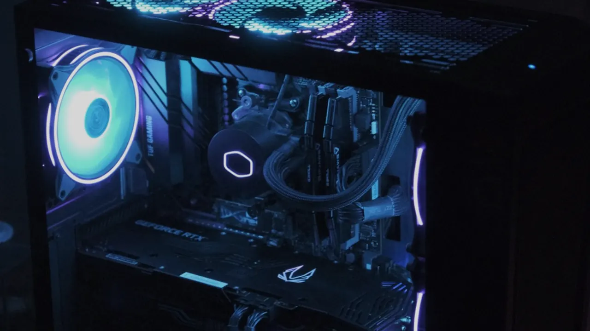
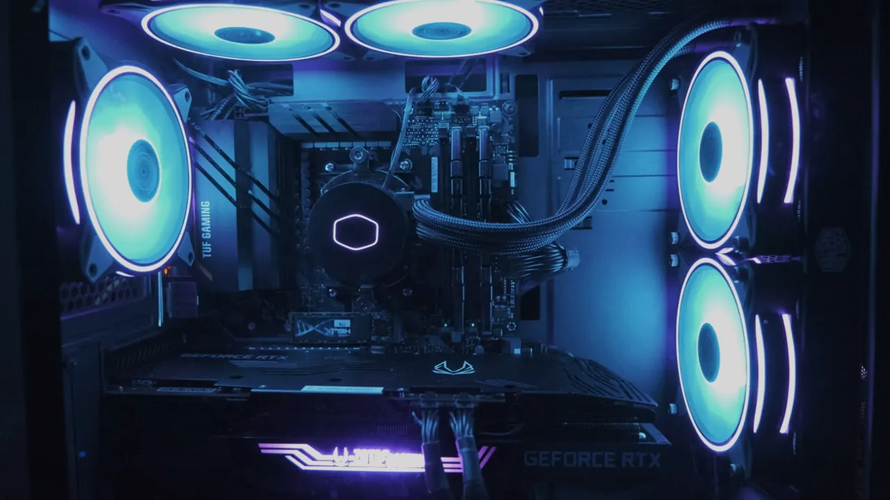
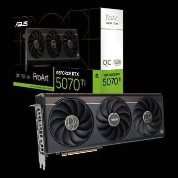

VOLTTECH / BUILT FOR YOUR NEXTPRETORIA, SOUTH AFRICA
OUT OF THE
ORDINARY.

THE NEXT MOVE IS YOURS ↗HARDWARE / HUMAN AMBITIONYOUR SETUP. YOUR STORY.
01 / 03BUILD
YOUR NEXT.
A fresh start, a clear purpose. Plan a PC around what you want to do.
Enter PC Builder ↗
THE COMPONENT PLAYGROUND
Small parts.
Big possibilities.
Tap a component. Explore what it brings to your setup.

GRAPHICS / MAKE IT VISUAL
Graphics cards
The pixels. The frames. The detail. Explore the visual engine of your PC.
Explore graphics cards ↗Have a component in mind? Ask VoltTech to confirm pricing and availability.
GOOD PCS DESERVE A SECOND WIND
Less “why?”.
More “let’s go.”

TRANSMISSION FROM THE OTHER SIDE
STATIC.Hardware. Games. Culture.
The publication by VoltTech.